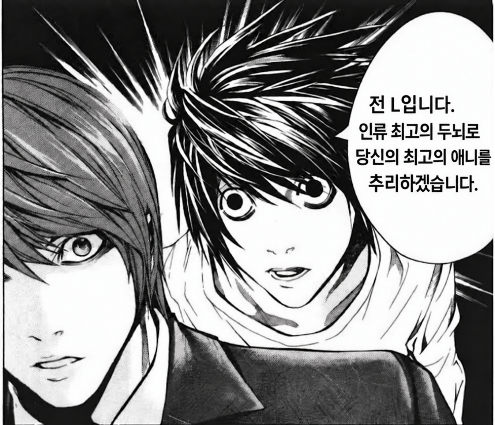
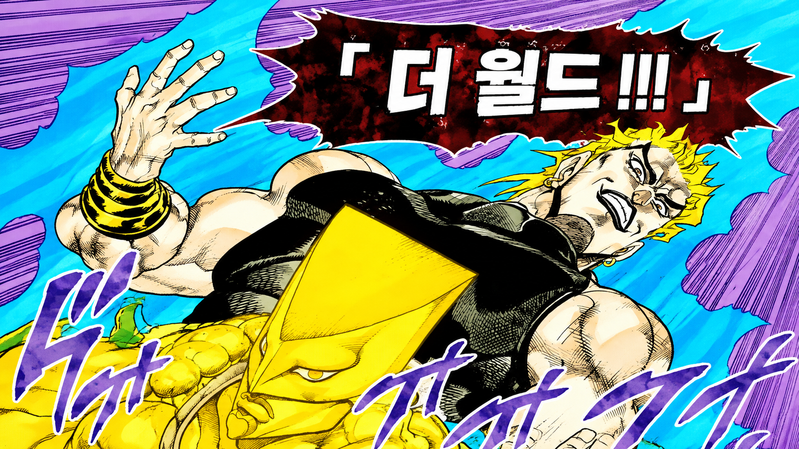

아직 시청 기록이 없어요.
Agent에게 기억나는 장면을 말하거나 시청 지점을 등록해 주세요.
 ANIWHERE AGENT
ANIWHERE AGENT
당신의 애니 생활을 함께할 aniWhere 에이전트예요!
그동안 본 애니를 알려주시면 스포일러 없이 도와드릴게요.
인기 작품에서 고르거나 제목으로 검색할 수 있어요.
TMDB 작품 포스터를 불러오는 중…
ANIWHERE AGENT흐릿한 기억 속 장면으로부터 정확한 작품과 회차를 찾아드려요.
내 서재에 저장한 작품과 회차입니다. 이 기록이 복습과 스포일러 차단 범위를 정합니다.
Agent에게 기억나는 장면을 말하거나 시청 지점을 등록해 주세요.
보기 전의 궁금증부터 원작으로 이어 읽기까지, 필요한 기능을 바로 선택하세요.

당신의 취향을 직접 추리합니다.
카드를 누르면 예시 결과를 바로 볼 수 있어요.
내 시청 기록에 맞는 작품을 찾고 있어요…

여기부터는 아직 보지 않은 이야기예요.